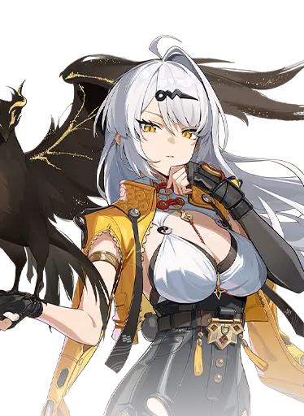
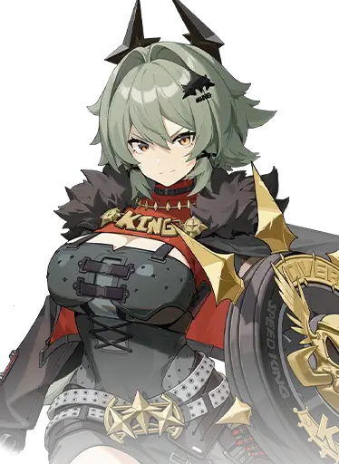

版本专题
新艾利都档案站首页方案
用 Wiki 首页的方式，把角色、剧情、材料和活动入口放在第一屏。



用 Wiki 首页的方式，把角色、剧情、材料和活动入口放在第一屏。
阵营、属性、定位、PV 与剧情关联。
按版本、章节和剧透等级筛选。

限时活动、复刻记录和视频入口。
安比电 / 击破妮可以太 / 支援比利物理 / 强攻本样板复用仓库内已保存的角色卡面资源，并参考官方百科与公开 Wiki 的信息架构。正式上线前建议逐项确认素材授权或替换为自有资源。
米哈游百科参考 Fandom 资料参考